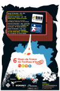

Footbag WorldWide Event Listing: TOURNAMENT RESULTS FOR 2004
FOOTBAG WORLDWIDE
:
EVENTS
TOURNAMENT RESULTS FOR 2004
Bulgarian
Czech
Danish
English (US)
Estonian
Finnish
French
German
Hebrew
Hungarian
Japanese
Polish
Portuguese (...
Russian
Spanish
WHAT'S NEW
OVERVIEW
F.A.Q.
FORUM
MEMBERS
REFERENCE
CLUBS
EVENTS
RESULTS
PHOTOS
VIDEOS
FREESTYLE
NET GAME
IFPA
GROUPS
RULES
LINKS
the Web
footbag.org
*Copyright © 2026,
International Footbag Players' Association
A 501(c)(3) Non-Profit Corporation
RESULTS
UPCOMING
ADD EVENT...
NEXT YEAR (2005) >>
<< PREVIOUS YEAR (2003)
December, 2004
Drunken Net Masters 2004
December 25-26, 2004
Frankfurt, Germany
Finnish Singles Net Footbag Championships 2004
December 4-5, 2004
Naantali, Finland
November, 2004
2004 Texas State Footbag Championships
November 13, 2004
Austin, Texas, USA
3rd Annual Seattle Juggling and Footbag Festival
November 12-14, 2004
Seattle, Washington, USA
Related Photos:

6e Open de France de Footbag
November 11-14, 2004
Paris, France
2nd Annual Piliscsaba Footbag Open
November 6, 2004
Piliscsaba, Hungary
October, 2004
1. Footbag- Net- Jam Berlin 04
October 30-31, 2004
Berlin, Berlin, Germany
Zocha Jam 2004
October 22-23, 2004
Wroclaw, Poland
2nd Annual UMaine Hacky Sack Club Tournament
October 16, 2004
Orono, Maine, USA
Frankfurt Footbag Open 2004
October 2-3, 2004
Frankfurt, Germany
September, 2004
8th Annual Footbag Finnish Open 2004
September 24-25, 2004
Helsinki, Finland
Russian Open Footbag Series/ Stage 5, Brooks Cup
September 11, 2004
Moscow, Russia
Funtastik Summer Classic Footbag Tournament
September 4-6, 2004
Harrisburg, Pennsylvania, USA
Montpellier Sunny Jam Open
September 4-5, 2004
Montpellier, France
Czech Championships 2004
September 4-5, 2004
Prague, Czech Republic
August, 2004
Russian Open Footbag Series/ Stage 4
August 27-29, 2004
Moscow, Russia
July, 2004
25th Annual IFPA WORLD FOOTBAG CHAMPIONSHIPS
July 26-August 1, 2004
Montreal, Quebec, Canada
6th Annual IFPA European Footbag Championships
July 15-18, 2004
Copenhagen, Denmark
June, 2004
Turku Open 2004
June 11-12, 2004
TURKU, Finland
German Footbag Open 2004
June 10-12, 2004
Frankfurt, Germany
May, 2004
Swiss Footbag Open 2004, FootJam04
May 22-23, 2004
Zurich, Switzerland
JFK Net Battle
May 16, 2004
Jyväskylä, Finland
SOUF 2004 Southeastern Regional Footbag Championships
May 8, 2004
Atlanta, Georgia, USA
Russian Open Footbag Series/ Stage 2
May 8, 2004
Moscow, Russia
May Day '04
May 1-2, 2004
Victoria, BC, Canada
Space City Freestyle Jam 2004
May 1-2, 2004
Houston, Texas, USA
April, 2004
Shercle Session #1
April 24, 2004
Tallinn, Harjumaa, Estonia
2004 New Paltz Footbag Jam
April 24-25, 2004
New Paltz, New York, USA
RNH Contest 2004
April 24-25, 2004
Paris, France
1st Annual Montana Freestyle Jam
April 24-25, 2004
Missoula, Montana, USA
March, 2004
TODEXON 5
March 20, 2004
Praha, Czech Republic
Russian Open Footbag Series/ Stage 1
March 19-21, 2004
Saint-Petersburg, Russia
The Windchill -- L'Hivernal de Footbag 2004
March 13, 2004
Montréal, QC, Canada
Swiat Zoski
March 5-6, 2004
Wroclaw, Poland
February, 2004
2nd Annual MECCA Footbag Cup
February 28-29, 2004
Győr, Hungary
5th Annual Colorado Shred Symposium
February 28-29, 2004
Denver, Colorado, USA
Aachen Indoor Open 2004
February 7-8, 2004
Aachen, Germany
January, 2004
5th Annual Open de France
January 24-25, 2004
Lyon, France
The 4th Annual Chilly Philly Freestyle Jam
January 2-3, 2004
Philadelphia, Pennsylvania, USA
NEXT YEAR (2005) >>
<< PREVIOUS YEAR (2003)
Last updated Sunday, February 8th, 2026, 01:16am (PST).
Copyright © 2026, International Footbag Players' Association, Inc., a U.S. 501(c)(3) non-profit corporation. All rights reserved.
PRIVACY POLICY
DONATE NOW